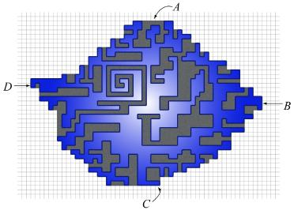

As Polygonovich walks, the interior of the polygon either always stays on his right side, or always on his left side. This is by no means a trivial fact. The polygon can be so complicated that given a poriton of the walk in the middle, one has no way to decide whether the left side is the interior, or the right side is. Let us accept this fact and assume the former case -- his right hand always touches the interior of the polygon.
Fix a vertical bar of unit width, observe the interaction between P, Polygonovich's walk, and B, the vertical bar.
Given any unit square U, we can decide whether it is in the polygon by counting the number of left-to-right crossings vertically above U, minus the number of right-to-left crossings above U. We can have a little counter inside U, and each time there is a left-to-right crossing above U, we increase the counter by 1; and for the right-to-left crossings, decrease the counter by 1.
After these mental exercises, we make the final jump back to the interaction between P and B. We may imagine a bounding box outside the polygon so that there are finitely many counters, and we now consider the area, it is nothing other than the summation of all the counters. To compute the area, we do the following.
Set A = 0 in the beginning. Walk along P, for each horizontal edge from left to right at height h, we increment A by h. This is the effect of this edge on all the counters for the unit squares below. And for each edge from right to left at height h, we decrement A by h.
All the time we assume the interior is always on the right hand side. In the opposite case, the highest edge on each bar will be a right-to-left cross, and all of the reasoning above is similar with only a difference in signs. So if we ever find that A is negative at the end, we can negate it and get the right area.
We note that this is just a special case of the simple algorithm for computing polygon areas in general. However, isn't the pictures nice, in the special form of integer grids and axis-parallel edges?
The polygon plus the pockets gives staircases in four (NE, NW, SE, SW) directions. A formal proof would be tedious. A picture with a good example should suffice.

As in the picture, let A be any one of the topmost edges, C be the bottommost
edge, B the right-most, and D the left-most one. We have 4 staircases: one
from A to B, one from B to C, one from C to D, and one from D to A.
Theoretically speaking, these are formed by the maximal points with respect to
four directions, and each of these staircases can be computed in
t(x) := the topmost polygon edge to cross the strip.
b(x) := the bottommost polygon edge to cross the strip.
H(x) := the topmost polygon edge or pocket on that strip.
L(x) := the bottommost polygon edge or pocket on that strip.
For x between A and B, H(x) is the maximum t(x') for all x' between x and B.
We may compute H(x) as follows
H(x) = t(x) for the last strip for x = (the second last strip) down to A H(x) = max(H(x+1), t(x))
The values on the other staircases can be computed in the same manner.
On strip x, the polygon plus pockets are the unit squares between L(x) and
H(x). So we can sum
(ii) minus (i).